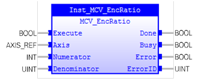

Allows the incoming encoder count to be scaled by a non-integer ratio.

MCV_EncRatio is used to allow the incoming encoder count to be scaled by a non-integer ratio.
Measured position = (mpos_count / input_count) x encoder_edges_input.
MCV_EncRatio does not affect PLCopen state machine.
Make sure the input and output parameters are of data type indicated in the table below.
Large ratios should be avoided as they will lead to either loss of resolution or much reduced smoothness in the motion. The actual physical encoder count is the basic resolution of the axis and use of this command may reduce the ability of the Motion Coordinator to accurately achieve all positions.
MCV_EncRatio is equivalent to TrioBASIC command ENCODER_RATIO . Please refer to TrioBasic Help for more information.
|
Name |
Data Type |
Description |
|
INPUTS |
||
|
Execute |
BOOL |
Start the motion at rising edge |
|
Axis |
AXIS_REF |
Reference to the axis |
|
Numerator |
INT |
An integer number which defines the numerator |
|
Denominator |
INT |
An integer number which defines the denominator |
|
OUTPUTS |
||
|
Busy |
BOOL |
The FB new output values are to be expected |
|
Done |
BOOL |
The FB command has been finished. |
|
Error |
BOOL |
Signals that an error has occurred within the FB |
|
ErrorID |
UINT |
Error identification |